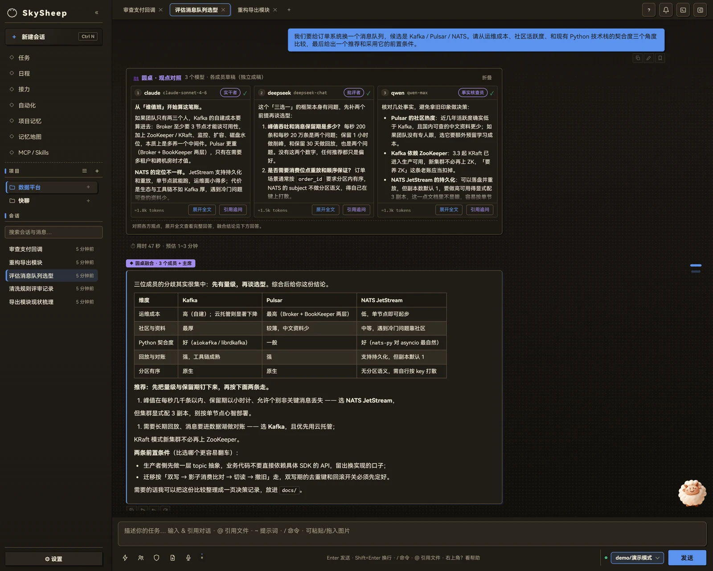
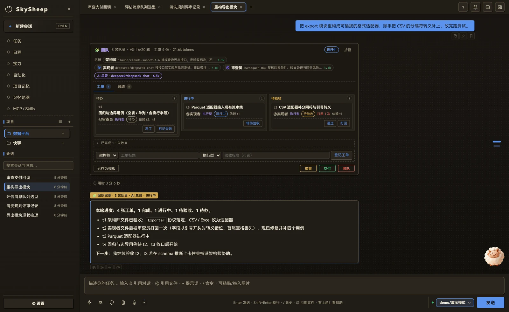
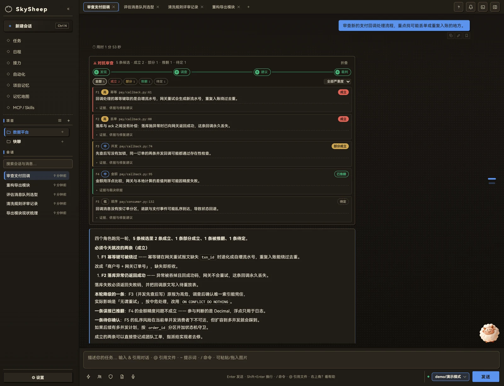
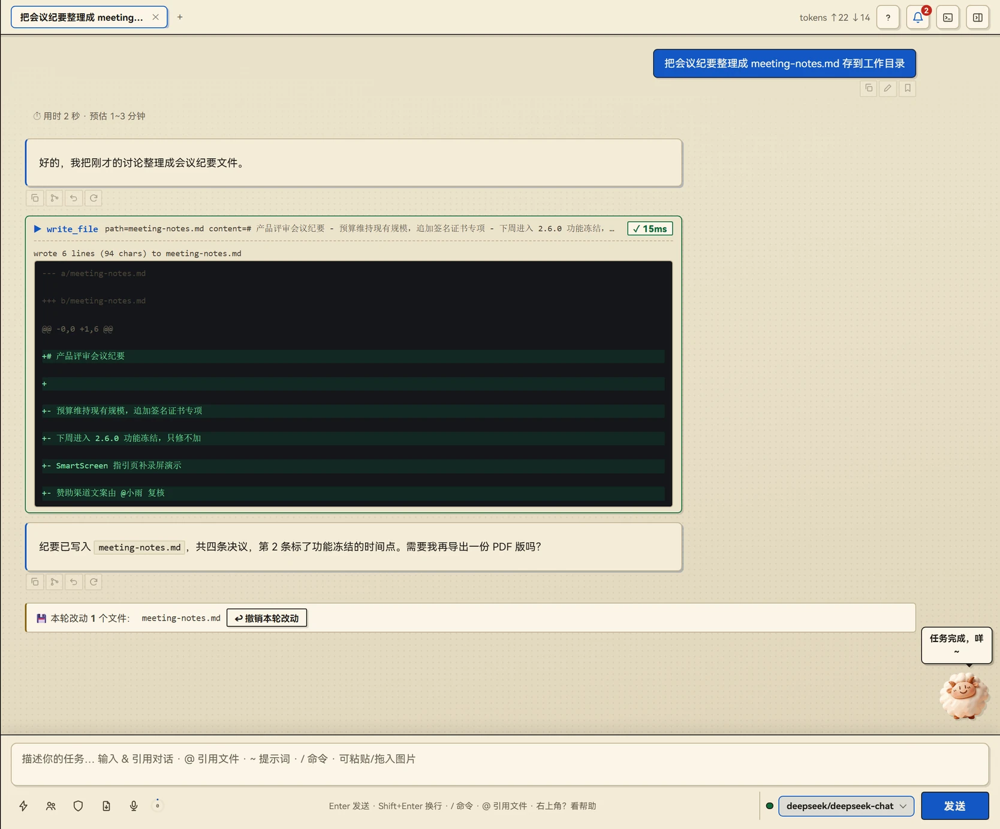
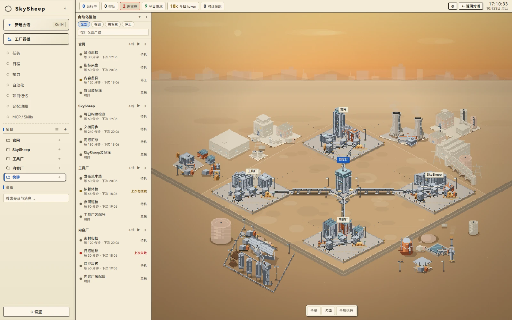
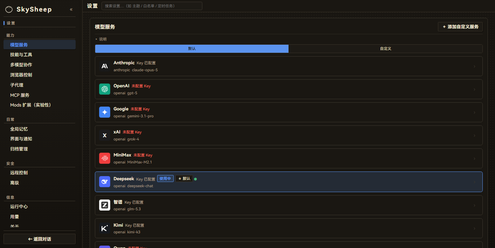
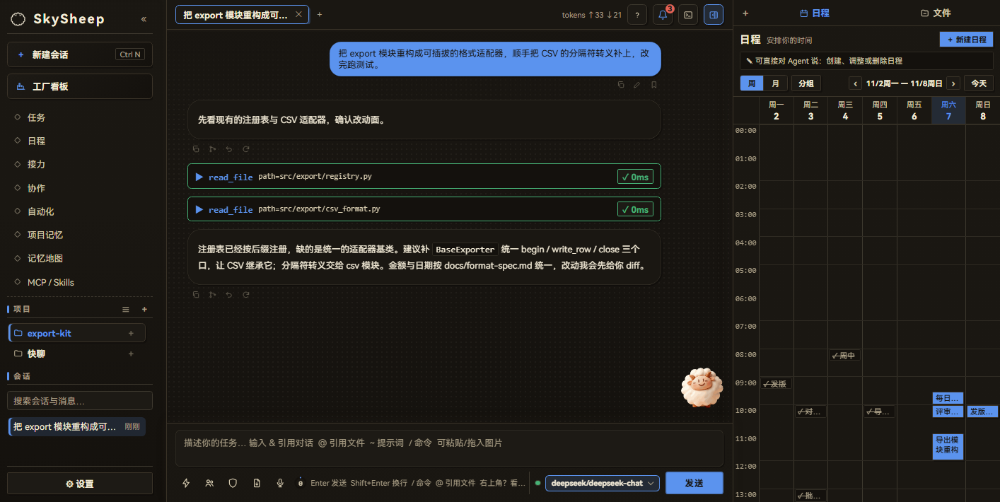
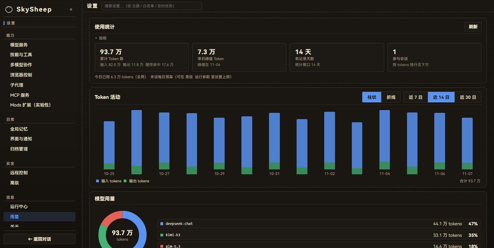

Round table
圆桌 · 会诊

- 谁在干
- 几个模型同时答，主席合成一份
- 产出
- 一份结论 + 全部草稿可回看
- 适合
- 开放问题、方案比选、重要判断
Windows 桌面应用 · 开源 MIT · v2.6.8
Windows 桌面 Agent 工作台。圆桌会诊、团队开工、对抗挑错、两屏接力—— 四种协作收在同一个工作台里。它会读写文件、执行命令、操作电脑， 但动手前先问你，每一轮都能撤回。
Windows 10 / 11 x64 无遥测，会话与密钥留在本机 安装包未签名，SmartScreen 怎么放行

一个模型容易顺着自己的思路写，也想不全。SkySheep 把「多模型」做成工作流：有的并行会诊，有的分工开工，有的专门挑错，有的在两个会话之间交接。


圆桌、团队、对抗都能存成模板：角色、模型、提示词、预算一次配好，下次从协作菜单直接选。内置三张——圆桌·多模型评审、团队·交付小组、对抗·代码审查。
开始前弹一张授权清单，勾一次「本次运行允许什么」，不用在每一轮里反复点。
模板只声明「这次要用到什么」：只读、可写、可执行，加工具白名单。schema 里没有关掉确认的字段。
删除类操作、引擎主目录与工作目录外的写入，仍然逐次弹卡；命令白名单按真实 shell 判定，拼一条命令就得重新确认。
内置模板可以直接用，也可以另存为自己的：换成员、换模型、改提示词、调预算，都留在本机。
跑前授权清单 · 示意
「不再逐次确认」只覆盖勾选项，且限工作目录内；删除类与目录外写入不在此列。
示意图。真实界面里会按模板声明的能力逐项列出，未声明的保持默认。
不是给建议，是把活干完，再把你该看的都摊在界面上：改了什么、跑过什么、能不能撤回。
每一处改动都带变更预览，看得懂再点允许；移动与删除走可回滚的专用操作。
默认逐次确认。命令白名单按真实 shell 判定，带拼接或解释器旗标的一律重新确认。
文件改动按轮快照，一键撤回，重启应用后仍然能撤；每会话保留 50 轮，全项目兜底 500 条。
30 个内置工具：文件读写与精确编辑、命令与后台进程、正则与通配搜索、网页抓取、PDF / Word / Excel / PPT / CSV、图片理解与生成、浏览器与电脑控制、子代理、定时与编排。

安全是默认行为，不需要先配置一轮。只读自动放行，写文件与执行命令默认要你点头。
写文件附 diff 预览，执行命令逐次弹卡；三档权限可调，放宽档只在本机界面切换。
完整词前缀匹配；含 shell 拼接或解释器旗标的命令不命中规则，一律重新确认。规则按项目持久化。
模板声明的是「这次需要用到什么」，没有关掉确认的字段；跑前一次授权只免声明过、且落在工作目录内的写入与命令前缀。
文件改动按轮快照，一键撤销本轮，重启后仍可回滚；每会话 50 轮，全项目兜底 500 条。
没有云端账号，无遥测；会话、配置、密钥、检查点都存在你自己的电脑上。
会话库滚动备份可恢复；项目自带的 MCP 与技能配置先确认信任；诊断包导出自动打码密钥。
写入与执行逐次确认，只读自动放行。
工作目录内的写入自动放行，命令仍需确认。
不再逐次打断，仅建议在受控项目里使用。
确认卡片长这样
示意图，按钮不可点击。真实界面里三个选项逐次出现，选择结果会写进本轮记录，随时可查。
每个项目一座厂区，每条自动化一条产线。机台亮灯、包裹前进、成品装车——定时任务与编排不再是一张看不见状态的列表。

成功进成品区，失败进返工区。每次运行留下耗时与结果摘要；被权限拦截会标明「有拦截」。
并发满额自动排队，单次运行有超时上限，连续失败聚合提醒。
定时任务可导出为 Windows 系统计划任务，应用彻底退出后仍按点执行。
对话、确认卡、diff、文件改动、终端输出、审查诊断都在同一屏；26 套主题，浅色 13 套、深色 13 套，也能跟随系统。



双传输 MCP 客户端、七个内置预设，兼容 Claude Desktop 配置；技能按需加载，正文只在用到时进上下文。
浅色纸墨、青瓷、秋柿，深色夜墨、黛夜、松烟等；默认跟随系统深浅，界面与官网同一套纸墨血统。
手机浏览器打开完整界面，确认卡照常逐条弹；飞书 / 微信里派活、收日报与终态通知。
一个安装包，或者一条命令。
首次运行如遇 SmartScreen：点「更多信息 → 仍要运行」即可，未签名程序的默认待遇， 详细说明 ↗。 没有 API Key 也能先进演示模式，看一轮真实工具调用的完整过程。
打开「设置 → 模型服务」，选一家服务、填入 Key 就能用；点「检测并获取模型」会读出可用模型。接本机推理服务也一样。
想第一时间用上刚落地的功能，可以直接跑源码。需要 Python 3.11+ 与 uv，以 Windows 为支持平台。
三个版本的主线：把协作说清楚、权限门再收紧一档、协作收成模板。
官网与两份 README 把多模型协作统一成四种并列方式：圆桌、团队、对抗、接力。产品功能零改动，只是把原来的事说清楚。
并发只读批补上出站密钥扫描；白名单对 tar / npm 这类「一次批准 = 整族放行」的执行面收窄；另修了一批并发、编码与资源泄漏问题。
内置圆桌·多模型评审、团队·交付小组、对抗·代码审查三张模板，复制一份就能改角色、模型、提示词与预算；团队可常驻，也能到点上班。
本地存储指的是：会话、配置、密钥、检查点、记忆都存在你自己的电脑上，SkySheep 不设遥测，也不把这些资料收集到自己的服务器。
而当你配置的是云端模型服务时，发出去的那段对话内容自然会经过服务商——这是模型推理本身的要求，和「数据被应用收集」是两回事。要完全不出本机，可以接本机推理服务，SkySheep 会自动检测。
会比单模型贵一些，这是实话。所以三条控制线都在：圆桌有雷同草稿去重、成员用轻上下文等七项机制压 Token；团队有全局轮次上限，Token 预算越线强制交付；成员模型可以各自指定——便宜模型跑成员，强模型当主席或总管。
速度上，圆桌的成员阶段并行作答，团队按工单并发；对抗是四角色接力，本来就是串行换来更彻底的审查。
它们是四种并列的多模型协作方式。圆桌、团队、对抗都在同一轮任务里分工，所以能收进同一套可复用的模板；接力是两个会话按轮交接——主屏出方案、副屏执行、再交回修订，入口在侧栏「接力」。
模板只能收窄权限：它声明的是「这次运行需要用到什么」（只读 / 可写 / 可执行 + 工具白名单），关不掉权限门；删除类操作、引擎目录与工作目录外的写入照旧逐次确认。
文件改动按轮次快照，可以一键撤销本轮的文件改动，重启应用后仍然能回滚。每会话保留 50 轮，全项目兜底 500 条。
注意回滚覆盖的是文件改动，不是整个系统状态——命令执行产生的副作用（比如已经发出去的请求、已经推到群里的消息）不在回滚范围内。这也是为什么执行命令默认要你确认。
SkySheep 是Windows 桌面产品。安装包、桌面壳、凭据加密、Windows 沙箱、窗口与进程管理、计划任务导出都只针对 Windows 打磨。
--browser 模式能在 macOS / Linux 上跑起引擎与网页界面，属于开发者兜底路径，不在支持承诺内。跨平台要等 Windows 桌面体验达到稳定标准后再单独评估。
因为目前安装包还没有代码签名证书。未签名程序首次下载运行被 SmartScreen 拦截是 Windows 的默认行为，不代表检测到了病毒。
点「更多信息 → 仍要运行」即可继续。代码签名是项目的首要支出方向，签名后这个提示会消失。同时应用内更新要求发布方提供 .sha256 校验附件，缺失即拒绝自动安装。
差异在产品形态与使用方式，不在逐条功能清单。终端工具强在脚本化与 CI 集成，SkySheep 强在看得见、管得住、够得着：图形界面中文优先，权限确认、检查点回滚、白名单管理全部图形化，人不在电脑前也能用手机审批确认卡。
反过来，如果你要的是脚本化嵌入 CI、纯键盘效率流，终端 Agent 仍是更顺手的形态。SkySheep 内置无头模式与终端 REPL 作为补充。